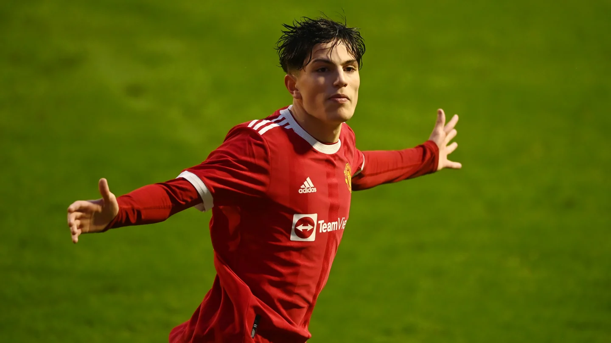

Alejandro Garnacho

อาเลฆันโดร การ์นาโช เฟร์เรย์รา (สเปน: Alejandro Garnacho Ferreyra) (เกิดเมื่อ 1 กรกฎาคม ค.ศ. 2004) เป็นนักฟุตบอลอาชีพ ซึ่งเล่นในตำแหน่งปีก ให้กับแมนเชสเตอร์ยูไนเต็ด ในพรีเมียร์ลีกและทีมชาติอาร์เจนตินา
การ์นาโชเข้าร่วมระบบเยาวชนของแมนเชสเตอร์ยูไนเต็ดจากอัตเลติโกมาดริด ในเดือนตุลาคม 2020 เขาชนะFA Youth Cup และรางวัลจิมมี เมอร์ฟี ผู้เล่นเยาวชนแห่งปี ในเดือนพฤษภาคม 2022 หนึ่งเดือนก่อนหน้านั้น เขาได้รับโอกาสลงเล่นให้ทีมชุดใหญ่เป็นครั้งแรกด้วยอายุ 17 ปี ในการแข่งขันพรีเมียร์ลีกเกมที่พบกับเชลซี
การ์นาโชเล่นให้ทีมชาติสเปนรุ่นอายุไม่เกิน 18 เขาเกิดในประเทศสเปนแต่ลงเล่นให้กับทีมเยาวชนของทีมชาติอาร์เจนตินา ก่อนที่เขาได้ลงเล่นเป็นครั้งแรกให้กับทีมชาติอาร์เจนตินาในรุ่นอายุไม่เกิน 20 ปี ต่อมาในปี 2023 เขาได้รับโอกาสลงเล่นให้ก้บทีมชาติอาร์เจนตินาชุดใหญ่
สโมสรอาชีพ
แมนเชสเตอร์ยูไนเต็ด
เยาวชน
เกิดในมาดริด การ์นาโชเข้าร่วมทีมเยาวชนอัตเลติโกเดมาดริดในปี 2015 จากเฆตาเฟ[2] ในเดือนตุลาคม 2020 เขาเข้าร่วมแมนเชสเตอร์ยูไนเต็ดอะคาเดมี[3] ยูไนเต็ดจ่ายเงินค่าตัวให้อัตเลติโก £420,000 ปอนด์[4]เขาเซ็นสัญญาอาชีพเป็นครั้งแรกกับสโมสรในเดือนกรกฎาคม 2021[4]
เขาได้รับความสนใจจากการทำประตูแบบโซโล่ของเขาในเอฟเอยูธคัพที่เอาชนะ เอฟเวอร์ตัน ซึ่งได้ถูกเสนอเขารับรางวัลประตูประจำเดือนของเดือนกุมภาพันธ์ 2022[5] หลังได้จากได้มีชื่อเป็นตัวสำรองที่ไม่ได้ใช้ในเกมพรีเมียร์ลีกหลาย ๆ นัด การ์นาโชได้ลงเดบิวต์ให้ทีมใหญ่ยูไนเต็ดในวันที่ 28 เมษายน โดยลงมาแทน แอนโทนี เอลังกา ในนาทีที่ 91 ในนัดที่เสมอกับเชลซี 1–1[6] การ์นาโชชนะรางวัลจิมมี เมอร์ฟี ผู้เล่นเยาวชนแห่งปีในเดือนพฤษภาคม[7] เขาทำประตูได้ 2 ประตูในรอบชิงชนะเลิศเอฟเอยูธคัพกับนอตทิงแฮมฟอเรสต์ในวันที่ 11 พฤษภาคม ช่วยให้ยูไนเต็ดชนะการแข่งขันเป็นครั้งแรกนับตั้งแต่ปี 2011.[8]
ย่อกลับ